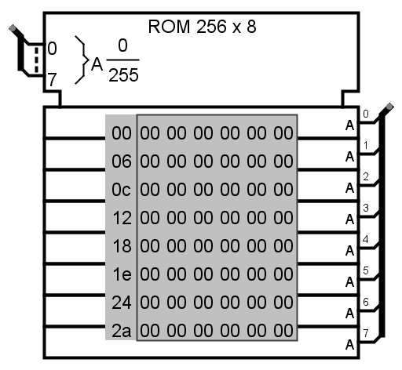

| Bibliothek: | Memory |
| Eingeführt: | 2.1.0 |
| Aussehen: |  |
The ROM component stores up to 16,777,216 values (specified in the Address Bit Width attribute), each of which can include up to 64 bits (specified in the Data Bit Width attribute). A circuit can access the current values in ROM, but it cannot change them. The user can modify individual values interactively via the Poke Tool, or the user can modify the entire contents via the Menu Tool.
Unlike the RAM component, the ROM component's current contents are stored as an attribute of the component and are saved in circuit files created by Logisim. If a subcircuit containing a ROM component is instantiated multiple times, those subcircuit instances refer to the same ROM contents from the subcircuit definition. Independent ROM components have their own contents.
Current values are displayed in the component. Addresses displayed are listed in gray to the left of the display area. Inside, each value is listed using hexadecimal. The value at the currently selected address will be displayed in inverse text (white on black).
When the component is selected or being added,
the digits '0' through '9' alter its Address Bit Width
attribute
and Alt-0 through Alt-9 alter its Data Bit Width
attribute.
See poking memory in the User's Guide.
Keines.
See pop-up menus and files in the User's Guide.